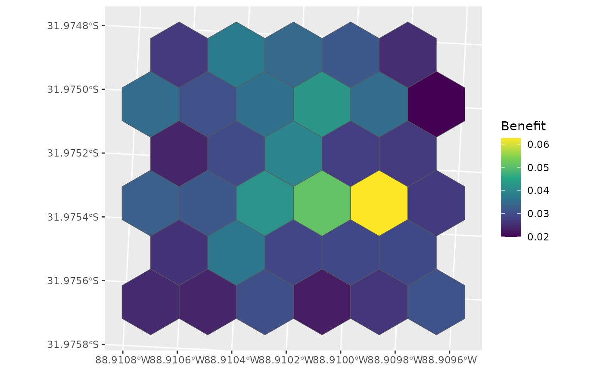
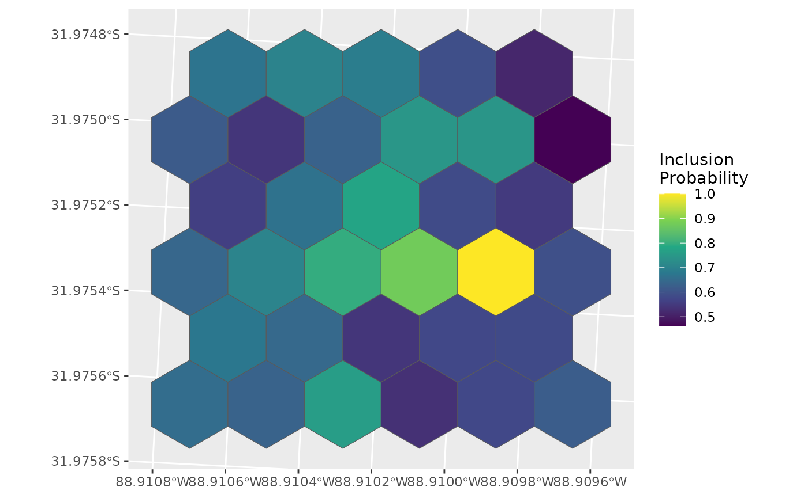
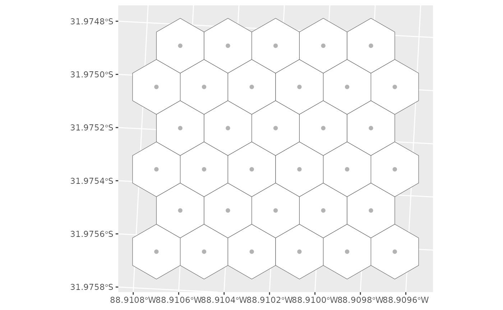
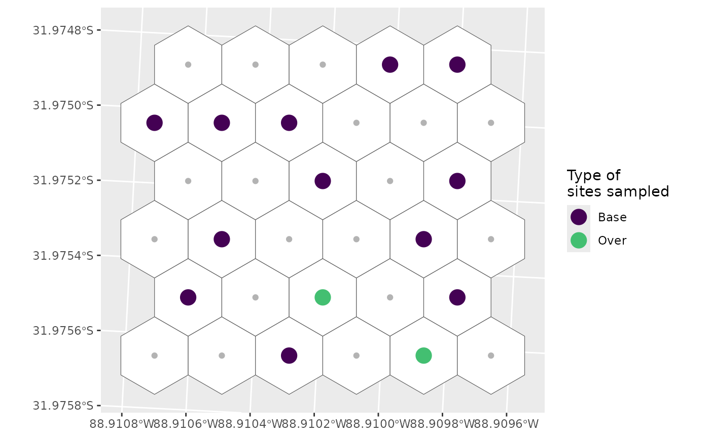
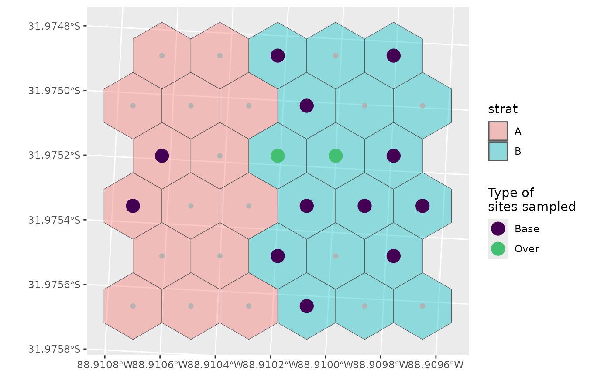

## Linking to GEOS 3.12.1, GDAL 3.8.4, PROJ 9.4.0; sf_use_s2() is TRUE##
## Attaching package: 'dplyr'## The following objects are masked from 'package:stats':
##
## filter, lag## The following objects are masked from 'package:base':
##
## intersect, setdiff, setequal, unionSetup
- Get spatial data - Hexagonal grid (primary spatial units - PSU) with land cover characteristics for each hex
- Get cost data
- Run
full_BASS_run()
1. Spatial Data
- Spatial data frame (sf object) with
- Columns Cell/Hex ID (e.g.,
ET_Index,hex_id) - Columns defining land cover (e.g., CORINE land cover CLC
CLC15_1)
- Columns Cell/Hex ID (e.g.,
- This must be either POINT or (MULTI)POLYGON (will be converted to points)
Land cover characteristics should not be percentages, but should be XXXX?
Clean up hex data
psu_hex <- clean_land_cover(psu_hex_dirty, pattern = "CLC0013_") %>%
units::drop_units() # for plotting, get rid of m^2## ℹ Renaming land cover columns
## • From: CLC0013_1, CLC0013_2, CLC0013_3, CLC0013_4, CLC0013_5, CLC0013_6
## • To: LC01, LC02, LC03, LC04, LC05, LC06
ggplot(data = psu_hex, aes(fill = LC01)) +
geom_sf() +
scale_fill_viridis_c()
Basic Run
d <- full_BASS_run(land_hex = psu_hex,
num_runs = 10,
n_samples = 3)## ℹ Spatial object land_hex should be POINTs not POLYGONs
## • Don't worry, I'll fix it!
## • Assuming constant attributes and using centroids as points
## ℹ Finished GRTS draw of 10 runs and 3 samples
ggplot(data = d, aes(colour = benefit)) +
geom_sf() +
labs(colour = "Benefit") +
scale_colour_viridis_c()
d_hex <- left_join(psu_hex, st_drop_geometry(d), by = "hex_id")
ggplot(data = d_hex, aes(fill = benefit)) +
geom_sf() +
labs(fill = "Benefit") +
scale_fill_viridis_c()
Including Costs
d <- full_BASS_run(land_hex = psu_hex,
num_runs = 10,
n_samples = 3,
costs = psu_costs)## ℹ Spatial object land_hex should be POINTs not POLYGONs
## • Don't worry, I'll fix it!
## • Assuming constant attributes and using centroids as points
## ℹ Finished GRTS draw of 10 runs and 3 samples
d_hex <- left_join(psu_hex, st_drop_geometry(d), by = "hex_id")
ggplot(data = d_hex, aes(fill = inclpr)) +
geom_sf() +
labs(fill = "Inclusion\nProbability") +
scale_fill_viridis_c()
What if the costs of that highly beneficial points was much higher?
which.max(d$benefit)## [1] 26
high_cost <- psu_costs
high_cost$RawCost[26] <- high_cost$RawCost[26] * 100
d <- full_BASS_run(land_hex = psu_hex,
num_runs = 10,
n_samples = 3,
costs = high_cost)## ℹ Spatial object land_hex should be POINTs not POLYGONs
## • Don't worry, I'll fix it!
## • Assuming constant attributes and using centroids as points
## ℹ Finished GRTS draw of 10 runs and 3 samples
d_hex <- left_join(psu_hex, st_drop_geometry(d), by = "hex_id")
ggplot(data = d_hex, aes(fill = inclpr)) +
geom_sf() +
labs(fill = "Inclusion\nProbability") +
scale_fill_viridis_c()
Still high inclusion probability, but other points become relatively ‘better’.
Runs by ‘hand’
psu_hex <- clean_land_cover(psu_hex_dirty, pattern = "CLC0013_")## ℹ Renaming land cover columns
## • From: CLC0013_1, CLC0013_2, CLC0013_3, CLC0013_4, CLC0013_5, CLC0013_6
## • To: LC01, LC02, LC03, LC04, LC05, LC06
samples <- draw_random_samples(psu_hex, num_runs = 10, n_samples = 3)## ℹ Spatial object land_hex should be POINTs not POLYGONs
## • Don't worry, I'll fix it!
## • Assuming constant attributes and using centroids as points
## ℹ Finished GRTS draw of 10 runs and 3 samples
benefit <- calculate_benefit(psu_hex, samples)## ℹ Spatial object land_hex should be POINTs not POLYGONs
## • Don't worry, I'll fix it!
## • Assuming constant attributes and using centroids as points
inc_prob <- calculate_inclusion_probs(benefit, costs = psu_costs)
d_hex <- left_join(psu_hex, st_drop_geometry(inc_prob), by = "hex_id")
ggplot(data = d_hex, aes(fill = inclpr)) +
geom_sf() +
labs(fill = "Inclusion\nProbability") +
scale_fill_viridis_c()
Alternative pipe
final <- psu_hex_dirty %>%
clean_land_cover(pattern = "CLC0013_") %>%
draw_random_samples(num_runs = 10, n_samples = 3) %>%
calculate_benefit(psu_hex, samples = .) %>%
calculate_inclusion_probs(costs = psu_costs)## ℹ Spatial object land_hex should be POINTs not POLYGONs
## • Don't worry, I'll fix it!
## • Assuming constant attributes and using centroids as points
## ℹ Renaming land cover columns
## • From: CLC0013_1, CLC0013_2, CLC0013_3, CLC0013_4, CLC0013_5, CLC0013_6
## • To: LC01, LC02, LC03, LC04, LC05, LC06
## ℹ Spatial object land_hex should be POINTs not POLYGONs
## • Don't worry, I'll fix it!
## • Assuming constant attributes and using centroids as points
## ℹ Finished GRTS draw of 10 runs and 3 samplesSelection probabilities
Simple selection
Here we’ll sample 12 sites with a 20% over sample, resulting in a total of 14 sites selected.
g <- ggplot() +
geom_sf(data = psu_hex, fill = "white") +
geom_sf(data = final, colour = "grey70")
g
sel <- run_grts_on_BASS(probs = final,
num_runs = 1,
nARUs = 12,
os = 0.2)
sel_plot <- bind_rows(sel[["sites_base"]],
sel[["sites_over"]])
g +
geom_sf(data = sel_plot, aes(colour = siteuse), size = 5) +
scale_colour_viridis_d(name = "Type of\nsites sampled", end = 0.7)
Stratified selection
First let’s create a dummy stratification and add it to our hexes for plotting
final <- mutate(final, strat = c(rep("A", 15), rep("B", 18)))
psu_hex_strat <- select(final, "hex_id", "strat") |>
st_drop_geometry() |>
left_join(psu_hex, y = _, by = "hex_id")
g <- ggplot() +
geom_sf(data = psu_hex_strat, aes(fill = strat), alpha = 0.4) +
geom_sf(data = final, colour = "grey70")
g
Now we’ll define how we want to sample these two strata.
Let’s assume we don’t really care about habitat A, so we don’t want to sample that one very much.
nARUs <- list("A" = 2, "B" = 10)
sel <- run_grts_on_BASS(probs = final,
num_runs = 1,
stratum_id = strat,
nARUs = nARUs,
os = 0.2)
sel_plot <- bind_rows(sel[["sites_base"]],
sel[["sites_over"]])
g +
geom_sf(data = sel_plot, aes(colour = siteuse), size = 5) +
scale_colour_viridis_d(name = "Type of\nsites sampled", end = 0.7)
You can see that we’ve sampled much more of B than A, and that there are no over samples in A, which makes sense:
0.2 * 2 = 0.4 which rounds down to 0
If we wanted an over sample for A, we could define specific over sample amounts instead.
nARUs <- list("A" = 2, "B" = 10)
os <- list("A" = 1, "B" = 4)
sel <- run_grts_on_BASS(probs = final,
num_runs = 1,
stratum_id = strat,
nARUs = nARUs,
os = os,
seed = 123)
sel_plot <- bind_rows(sel[["sites_base"]],
sel[["sites_over"]])
g +
geom_sf(data = sel_plot, aes(colour = siteuse), size = 5) +
scale_colour_viridis_d(name = "Type of\nsites sampled", end = 0.7)
Alternatively at this point (and especially with more strata) it might be easier to supply a data frame rather than a series of lists.
nARUs <- data.frame(n = c(2, 10),
strat = c("A", "B"),
n_os = c(1, 4))
sel <- run_grts_on_BASS(probs = final,
num_runs = 1,
stratum_id = strat,
nARUs = nARUs,
seed = 123)
sel_plot <- bind_rows(sel[["sites_base"]],
sel[["sites_over"]])
g +
geom_sf(data = sel_plot, aes(colour = siteuse), size = 5) +
scale_colour_viridis_d(name = "Type of\nsites sampled", end = 0.7)